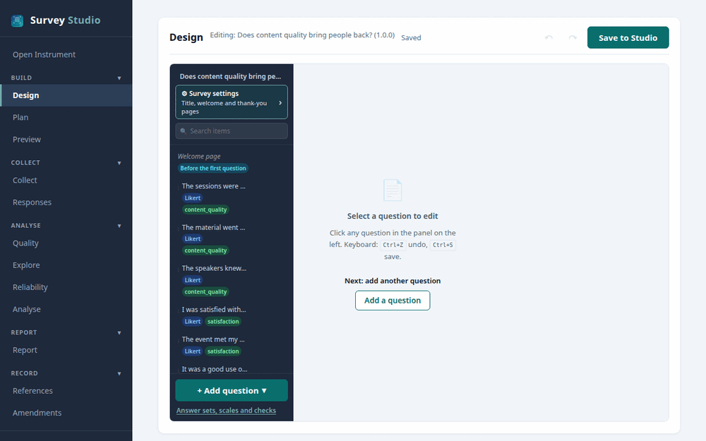
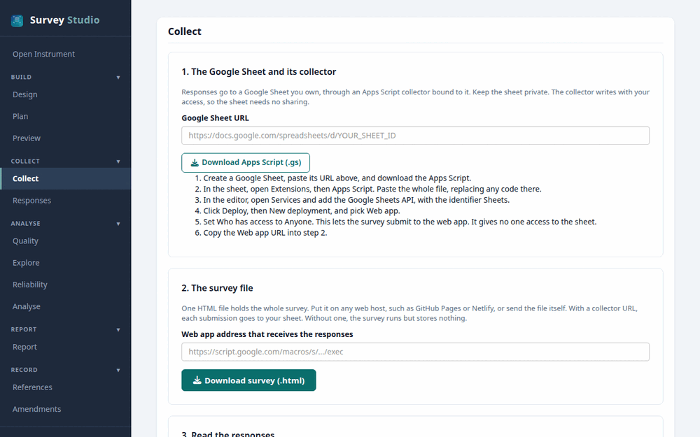
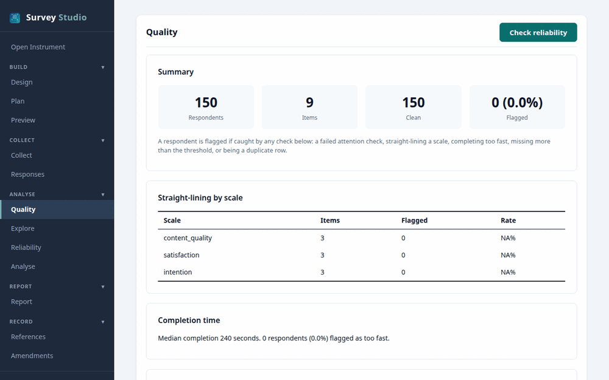
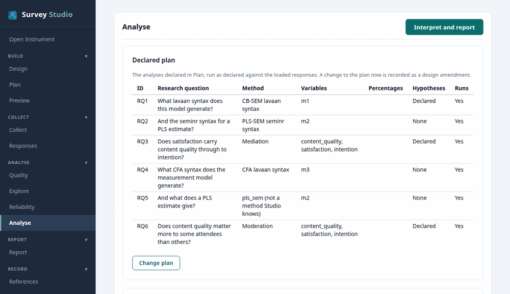
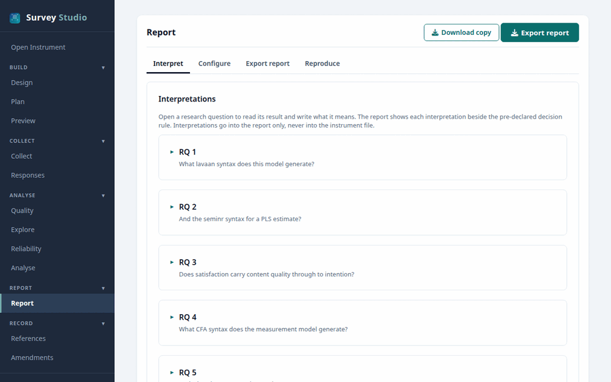

Measurement model questionnaire (CFA and SEM)
Source:vignettes/articles/templates/measurement-model-questionnaire.Rmd
measurement-model-questionnaire.RmdA study exploring a proposed relationship between content quality, satisfaction and the intention to return. Specify the measurement and structural model, then generate syntax for lavaan or seminr. surveyframe gives you the questionnaire, the model syntax and the report.
Preview the questionnaire
This is the questionnaire as respondents see it. It is a preview to try, and it stores no answers. Open the Measurement model questionnaire (CFA and SEM) preview in a new tab.
The example analysis plan
Before any data is collected, surveyframe writes the pre-analysis plan: the study, the questionnaire, each research question with its hypotheses, method and decision rule, and the fields a preregistration still asks you to complete. Read the Measurement model questionnaire (CFA and SEM) plan, or download the Measurement model questionnaire (CFA and SEM) instrument (.sframe) to adapt it.
Methods it declares: Structural equation model (lavaan syntax), PLS structural equation model (seminr syntax), Mediation analysis, Confirmatory factor analysis (lavaan syntax), PLS structural equation model, Moderation analysis.
What you get
The study in SurveyStudio, stage by stage: design, collect, check, analyse and report.





Open this instrument in SurveyStudio
- Set up R, RStudio and surveyframe as Get started shows.
- To explore the example with its demonstration responses, open
RStudio’s Addins menu, choose surveyframe: Try
a demo and pick
sem_pls, which opens this template’s study. - To make it your own study, download the instrument above, choose surveyframe: Open analysis workspace from the Addins menu, then Open Instrument in SurveyStudio’s left menu, and select the file.
- Adapt the questions on the Design screen and the research questions under Plan, press Save to Studio, then press Download copy on the Report screen to save your study.
Questions
Which software estimates the model?
surveyframe writes the model syntax for you to fit in lavaan (covariance-based SEM and CFA) or seminr (PLS-SEM). It estimates the mediation and moderation itself, by regression, and reports those estimates.
Optional R code
Open this study in R
d <- sframe_demo("sem_pls")
render_report(d$instrument) # the pre-analysis plan
results <- run_analysis_plan(d$responses, d$instrument)